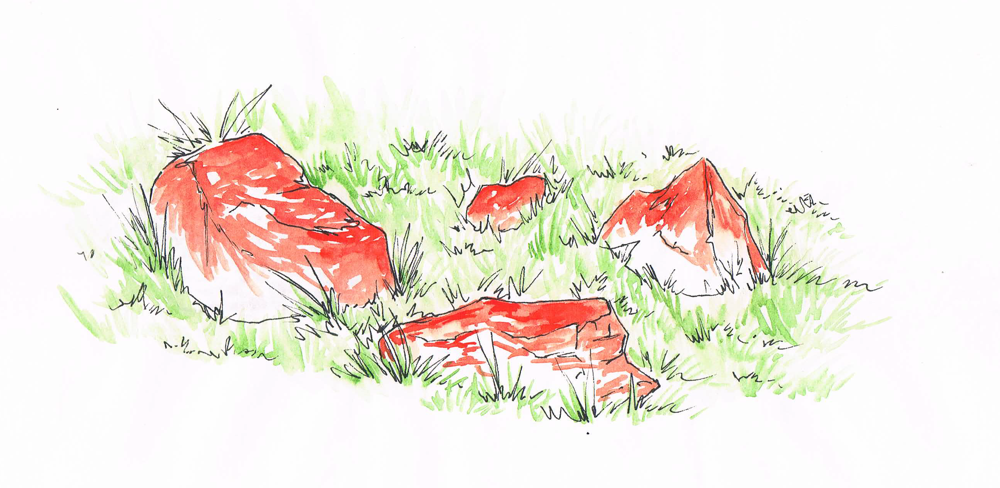
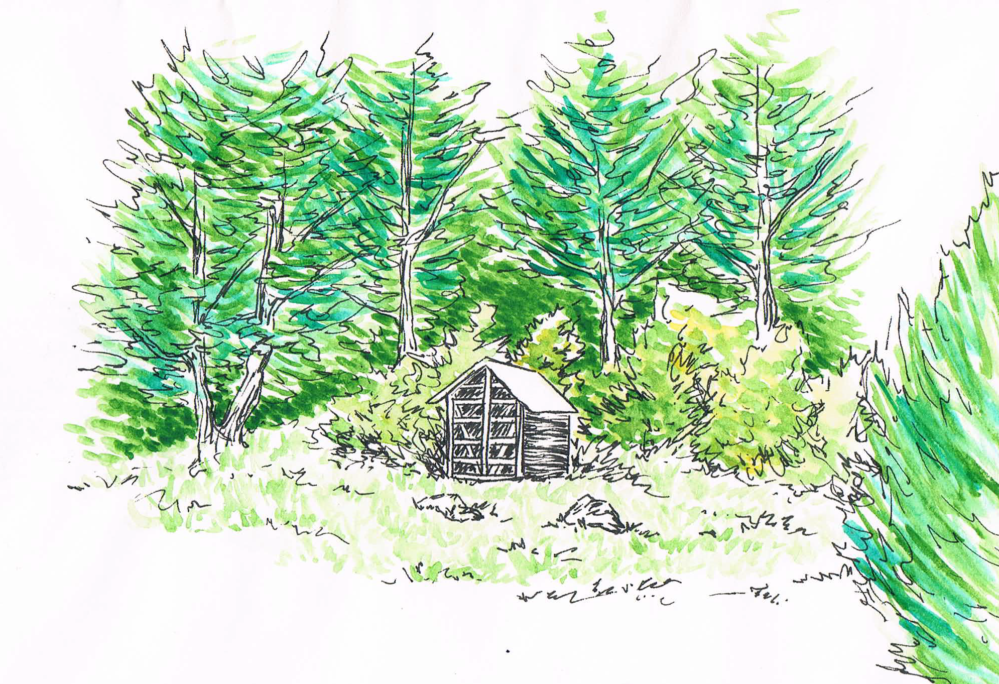
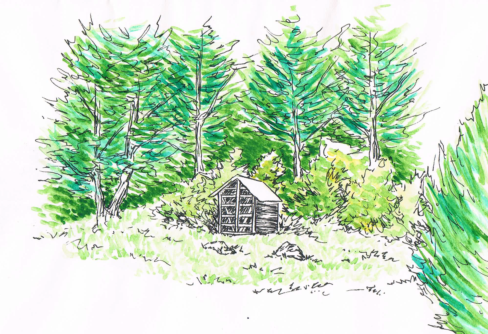
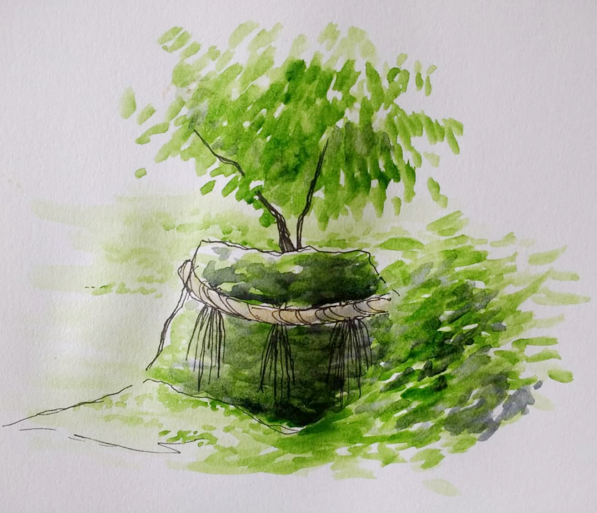
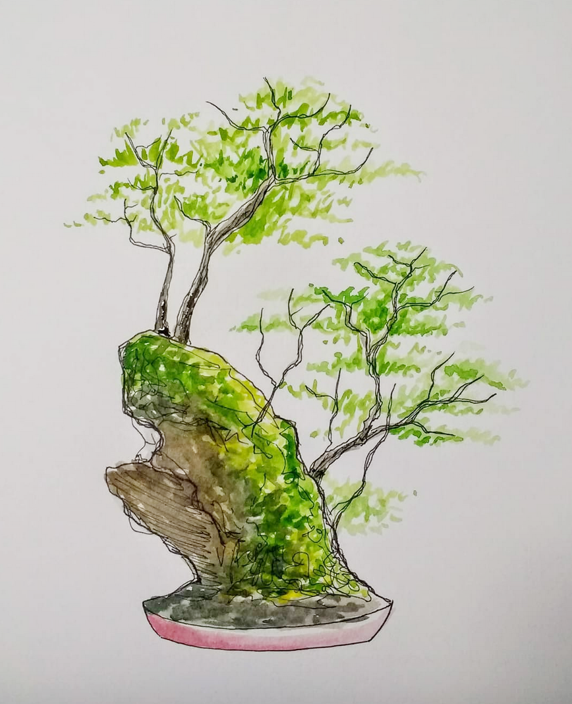
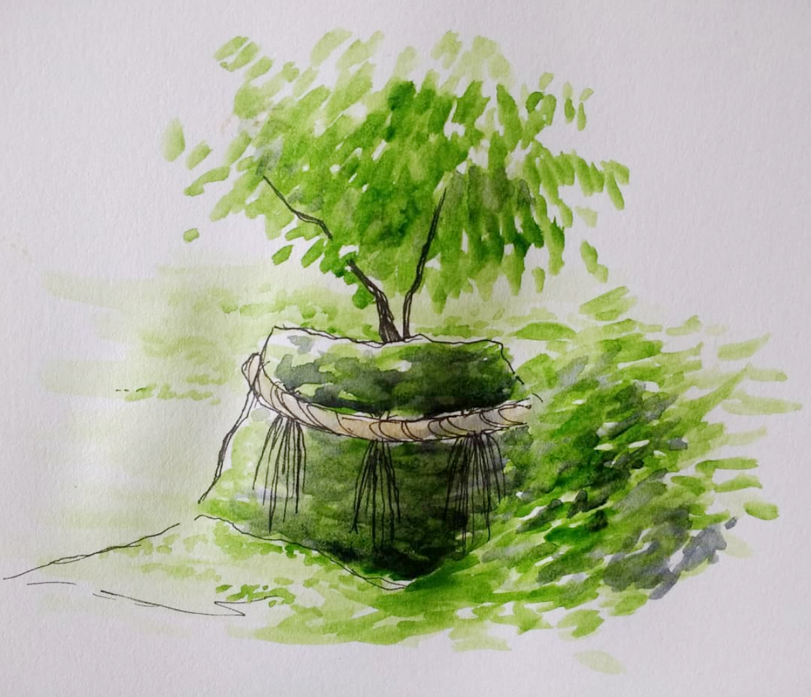
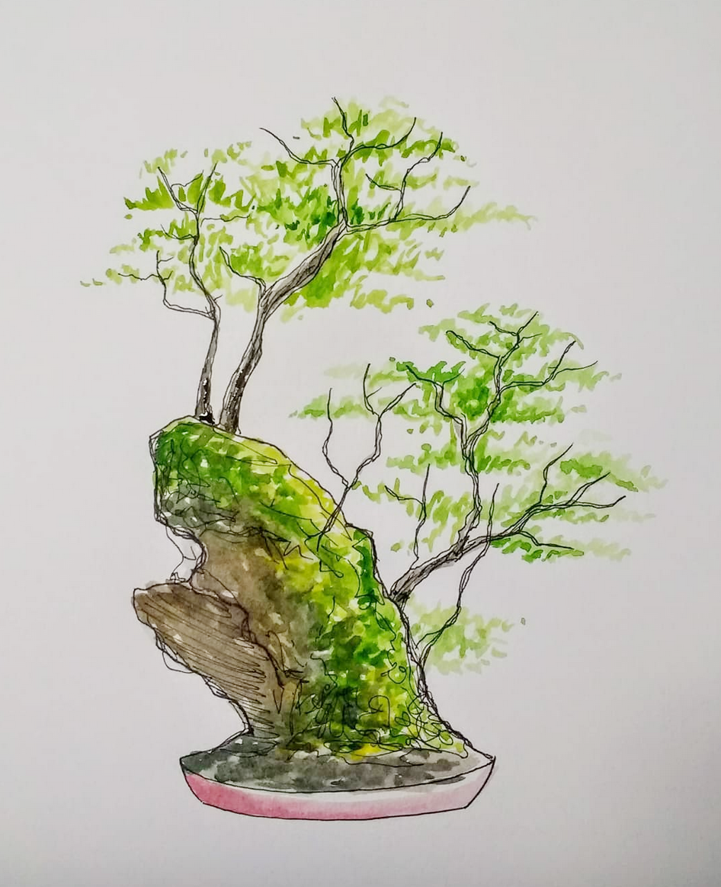

Acuarela
El estudio oficial en acuarela comienza en 2006 bajo el aprendizaje del artista Jorge Young y continúa hasta la fecha. El foco del estudio ha sido el color, la textura y la apreciación de la vida natural, y continúa hasta la fecha.
El estudio oficial en acuarela comienza en 2006 bajo el aprendizaje del artista Jorge Young y continúa hasta la fecha. El foco del estudio ha sido el color, la textura y la apreciación de la vida natural, y continúa hasta la fecha.
  

  
 